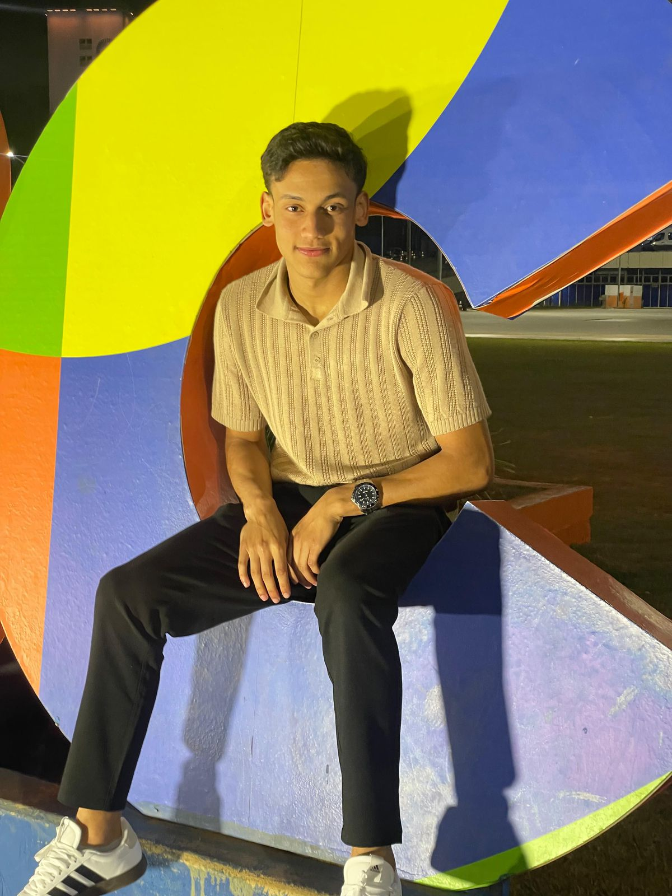

Interfaces claras
Estruturas semânticas e visual consistente.
Em formação · Front-End
Desenvolvedor Front-End
Transformo ideias em experiências digitais claras, funcionais e feitas para a web. Estou construindo minha jornada com curiosidade, cuidado e atenção a cada detalhe.

01 / Sobre mim
Sou desenvolvedor Front-End em formação e gosto de criar interfaces que unem simplicidade, personalidade e facilidade de uso. Cada projeto é uma oportunidade para aprender algo novo e transformar uma ideia em uma página real.
Atualmente, estou desenvolvendo minha base em tecnologias web e explorando boas práticas para criar experiências responsivas e bem cuidadas.
Estruturas semânticas e visual consistente.
Layouts preparados para diferentes telas.
02 / Projetos selecionados
Uma seleção de estudos e projetos pessoais que fazem parte da minha evolução como desenvolvedor.
Uma vitrine digital para automóveis, com foco em apresentação visual e navegação intuitiva.
Uma página inspiradora para descobrir destinos e imaginar novas experiências pelo mundo.
Estudo de interface inspirado em uma página de produto, explorando estrutura e apresentação de conteúdo.
03 / Contato
Estou sempre aberto a conhecer pessoas e novos projetos.